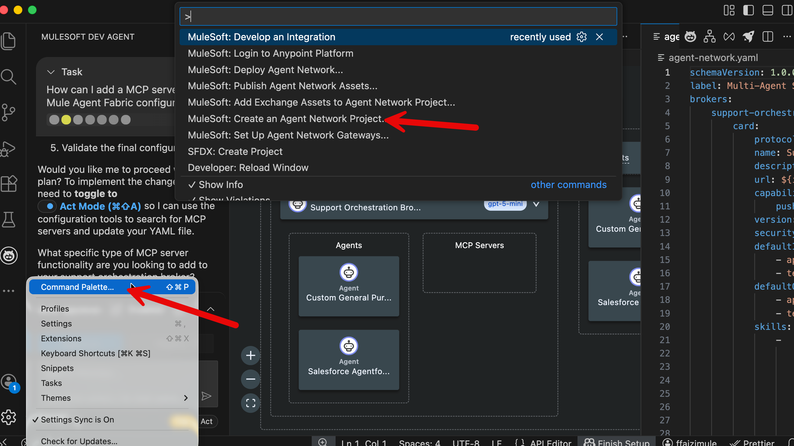
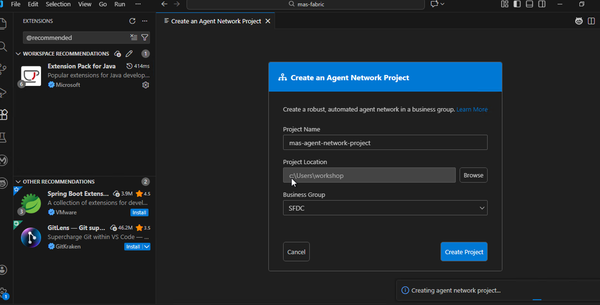
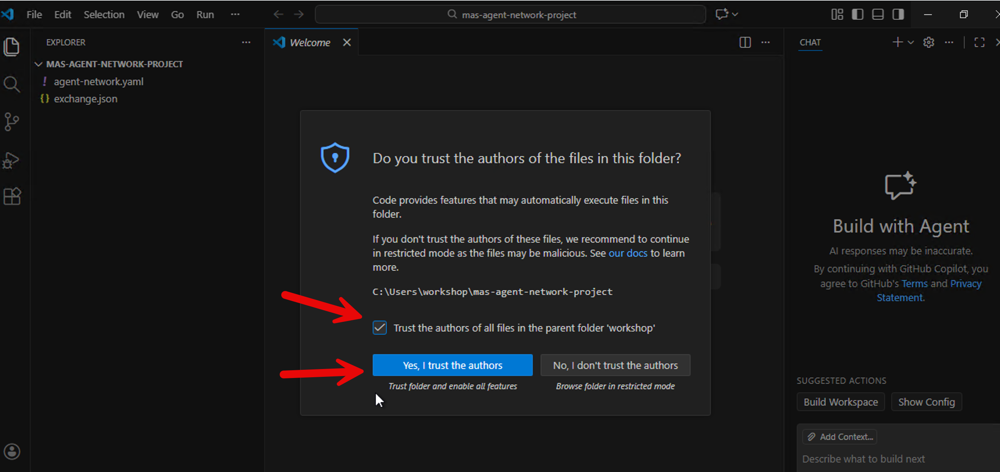
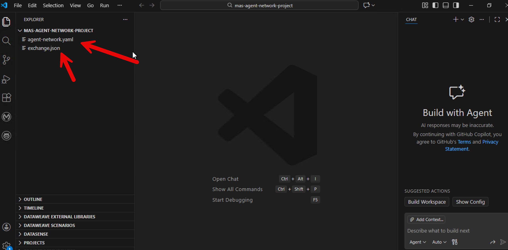
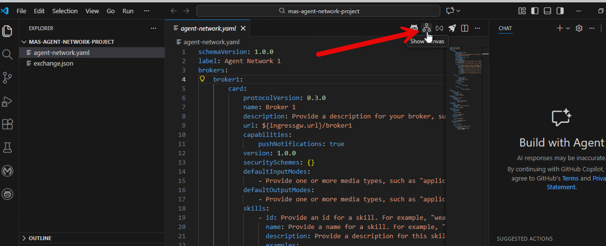
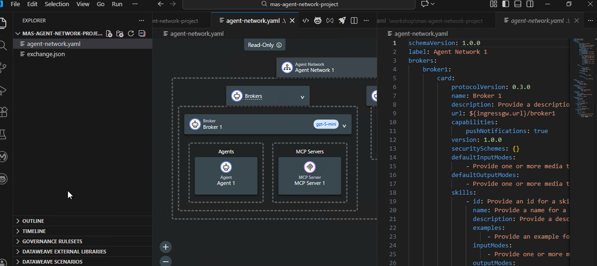
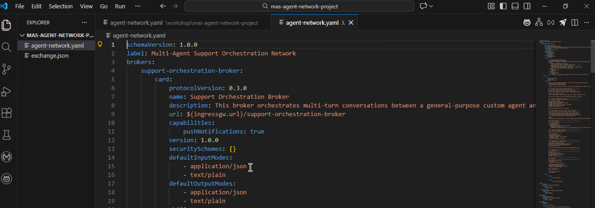
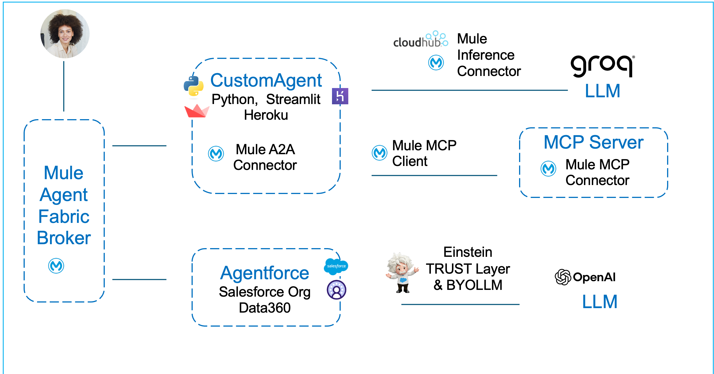
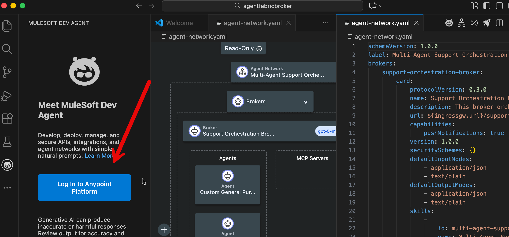
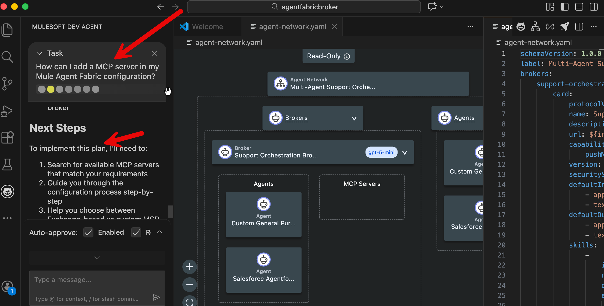

In this workshop module we explore how multiple agents in an enterprise can be orchestrated using Mule Agent Fabric.
MuleSoft Agent Fabric is a central platform for managing AI agents. It brings together agents built on different systems so they can be discovered, secured, and coordinated from one place. This stops "agent sprawl" by giving you a single control point for your entire AI network.
The platform handles four main tasks:
In this module we take a closer look at Mule Agent Broker.
In this section we examine how to design a multi-agent system orchestration with Mule Fabric Agent Broker.
Configuring & deploying the Mule Broker is very straightforward.
agent-network.yaml file.exchange.json.Let’s explore a working Broker Configuration.
Let’s open VS Code. The Mule ACB tool is embedded in VS Code.
Let’s type in the command palette: MuleSoft: Create an Agent Network Project

You may be asked to authenticate via embedded browser. Use your Mule trial account to authenticate.


In your project, Mule ACB will create two files.

Click view canvas to view your skeleton file.


Now we will replace this skeleton with a working broker configuration. Replace the contents of the agent-network.yaml file with the file provided to you as follows.
agent-network.yaml that has been automatically generated for you. Don’t delete the file itself.agent-network.yaml file: Download File By default the file gets downloaded to C:\Users\workshop\DownloadsIn VS Code open the downloaded file and copy the contents of the file and paste it over the now empty agent-network.yaml file.

Now you can examine this working example of how we provide instructions to the Mule Fabric Orchestrator to manage agents and MCP servers.

agent-network.yamlThis broker configuration has been created to orchestrate two agents that collaboratively serve a website visitor. When the visitor on the website clicks on the agent, he/she is greeted by the Mule Broker.
This logic for this orchestration is defined in the agent-network.yaml file.
Think of this file as the DNA of your Broker. It tells the MuleSoft engine three things:
Here is the breakdown of the key sections from your specific Support Orchestration Broker file.
card)It describes the broker to the outside world so other systems know what it does.
brokers:
support-orchestration-broker:
card:
name: Support Orchestration Broker
description: This broker orchestrates multi-turn conversations...
skills:
- id: multi-agent-support-orchestration
examples:
- What is the headquarters of Google?
- Can you check the status of my support case #12345?name & description: These must be clear. In your file, the description explicitly states it routes between a "custom agent" and a "Salesforce agent".skills: This is crucial for discovery. The examples list helps the AI understand intent. If a user asks "Check my support case," the system matches it to this broker because of the examples provided here.spec)This is the most critical part. The spec defines the intelligence.
2A. The LLM Configuration
spec:
llm:
ref:
name: azure-open-ai
configuration:
model: gpt-5-miniWhat it does: This tells the broker which brain to use. You are using azure-open-ai with the model gpt-5-mini. This model will process every user prompt to decide what to do next.
2B. The System Instructions (instructions)
This is the System Prompt. It is the set of rules the Broker must follow for "Multi-Agent Orchestration"
C. The Limbs (links)
links:
- agent:
ref:
name: custom-agent
- agent:
ref:
name: agentforce-agentWhat it does: These are the only two "tools" the Broker is allowed to touch. If it's not listed here, the Broker cannot access it.
3. The Inventory (agents & llmProviders)
This section registers the components referenced above.
agents:
custom-agent:
label: Custom General Purpose Agent
metadata:
protocol: a2a
platform: a2a-SDKConcept: This defines what "custom-agent" actually is (in this case, an Agent-to-Agent (A2A) compatible service).
4. The Wiring (connections)
This is where the rubber meets the road. It maps the abstract names to actual URLs and Credentials.
connections:
custom-agent:
spec:
url: https://customagent-a2a-ce169bafb6d6.herokuapp.com/
azure-open-ai-connection:
spec:
configuration:
apiKey: ${openai.apiKey}custom-agent lives on Heroku (herokuapp.com).${openai.apiKey}. Never hardcode passwords in YAML. This syntax tells the Broker to look in a secure configuration file (or environment variable) for the actual key. This api key is stored in a separate file exchange.jsonLet’s say, that in addition to the two A2A agents, we want to add a MCP server in the broker configuration.
We have two options.
agent-network.yaml.Note: The Mule Dev Agent may not be available to workshop participants as it requires you to authenticate with a Mule Enterprise licensed account. However following is a screenshot of how we interact with the Mule Dev Agent.
Mule Dev Agent is available within Mule Anypoint Code Builder (ACB). Mule ACB lives within VS Code as a set of extensions.
Following is a quick example of how MuleSoft facilitates generative development (in addition to point and click and programmatic options)

MuleSoft Dev Agent is a LLM powered Gen AI agent. It can understand your question and optionally update the files in your folder. As an example in our configuration if we would like to include a MCP server, we could ask the Mule Dev Agent.

Mule Agent Fabric Broker is a centralized orchestration framework that intelligently routes user requests to specialized "Limbs" (sub-agents) like Salesforce or Custom Agents instead of processing everything itself.
Defined declaratively in an agent-network.yaml file, the Broker uses an LLM (such as Azure OpenAI) combined with strict system instructions (e.g., "Routing," "Pass-Through," and "Agent Lock" protocols) to detect intent and delegate tasks without hallucinating or losing context.
To implement this, developers use Anypoint Code Builder (ACB) to follow a standardized lifecycle: establishing a secure Ingress Gateway, creating the Agent Network Project to define tools and logic, publishing the asset to Anypoint Exchange, and finally deploying & monitoring the active Broker to a cloud runtime for governed external access.
Perform these steps in exactly this order to configure and deploy a Fabric Agent Broker using Mule Anypoint Code Builder.
Prepare the secure gateway in your private cloud space.
Command: CMD + SHIFT + P
Select: MuleSoft: Set Up Agent Network Gateways
Initialize the local project structure.
Command: CMD + SHIFT + P
Select: MuleSoft: Create an Agent Network Project
Upload the Broker definition to Anypoint Exchange.
Command: CMD + SHIFT + P
Select: MuleSoft: Publish Agent Network Assets
Push the Broker to the runtime environment.
Command: CMD + SHIFT + P
Select: MuleSoft: Deploy Agent Network
Final Action: Once deployed, copy the public endpoint (the URL ending in your project name) to begin using your agent.
When you run MuleSoft: Deploy Agent Network, you are taking the Agent Network Project (the agent-network.yaml definition file where you listed your tools and LLM) and deploying it as a running Mule Application.
This application acts as the Broker. It sits online, receives user prompts, and uses the logic defined in your "Agent Network" to decide which tools to call.
The Mule Agent Fabric Broker configuration is done in the Mule Anypoint Code Builder tool.
Mule Anypoint Code Builder (ACB) is based on VS Code. You execute tasks using the Command Palette:
CMD + SHIFT + P (Mac) or CTRL + SHIFT + P (Windows).MuleSoft into the search bar to filter for Fabric commands, then select the specific command you need.